Neural Networks
Theory and Practice
January 2017
Jesus Ojeda
- BSc & MSc @ UdL
- Computing PhD @ UPC
- Medical Imaging @ Galgo Medical
- @depthtest
Content
Context
Neuroscience Background
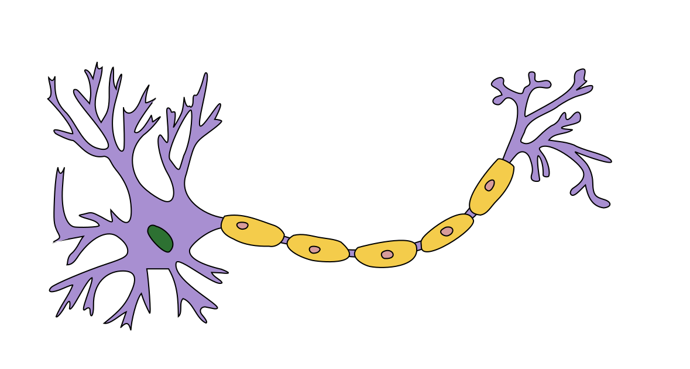The Perceptron

$$g(in_j) = \begin{cases}1,& in_j > 0\\0,& otherwise\\ \end{cases}$$
$$ in_j=\sum^n_{i=0} w_{i,j}a_i$$
Hands-on: the AND operator / logic gate
$$g(w_A A + w_B B + w_0) = A·B$$
$$w_A A + w_B B + w_0 > 0$$
$$w_A = 0.6$$ $$w_B = 0.6$$ $$w_0 = -1$$
| A | B | A·B |
|---|---|---|
| 0 | 0 | 0 |
| 0 | 1 | 0 |
| 1 | 0 | 0 |
| 1 | 1 | 1 |
Homework! Create some other logic gates. Just kidding!
Neural Networks
- Connecting neurons in a network

- Can model any function
- Different activation functions:
- Hard-threshold : perceptron
- Logistic function : sigmoid, tanh, REctified Linear Unit, ...
- We need a loss/error/energy function to minimize, i.e. $$Loss(\mathbf{w}) = |\mathbf{y} - \mathbf{h}(\mathbf{x})|^2 $$
Learning is (mostly) about minimizing error!
Gradient descent
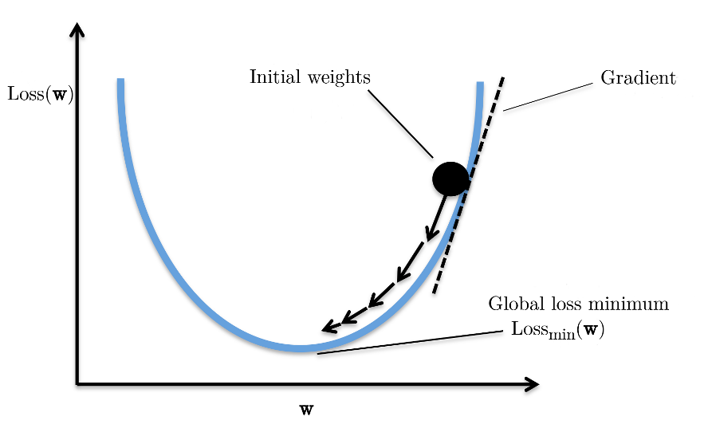
$$\mathbf{w_{k+1}} = \mathbf{w_k} - \lambda \nabla Loss(\mathbf{w_k})$$
Backpropagation
a.k.a. Let's apply Calculus Chain Rule!

Propagate the loss back from $H$ to the inputs $X_{*}$, updating the weights $\mathbf{w}$ between neurons on the way.
Backpropagation (2)
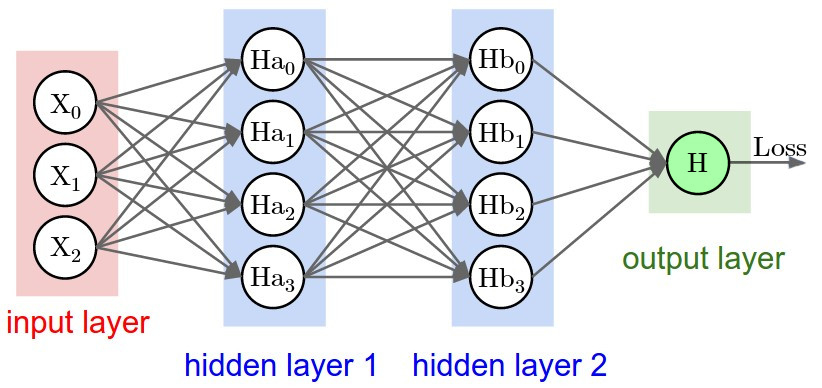
$$\nabla Loss(\mathbf{w}_H) = \frac{\partial Loss}{\partial \mathbf{w}_{Hb_i, H}}$$
Backpropagation (3)
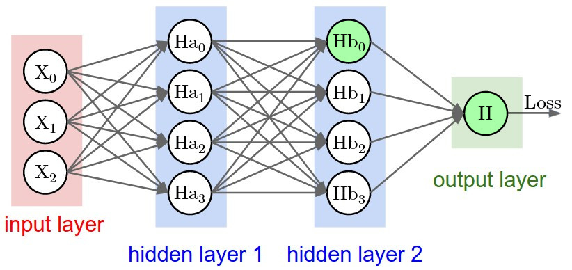
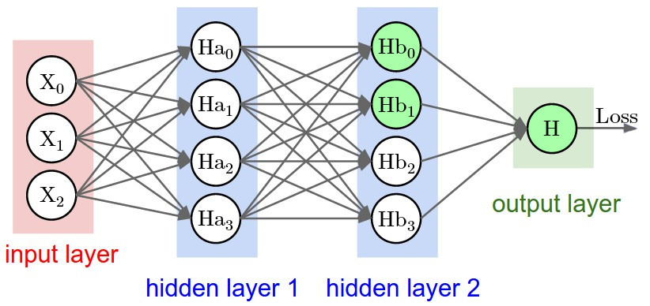
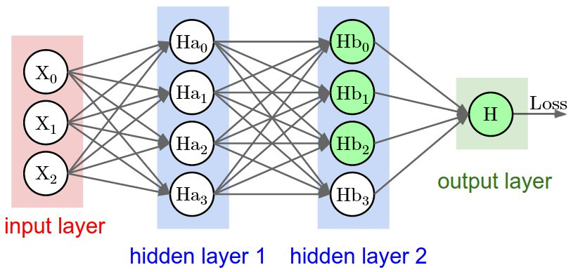
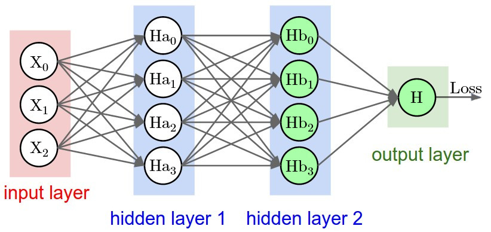
$$\nabla Loss(\mathbf{w}_{Hb_0}) = \frac{\partial Loss}{\partial w_{Hb_0, H}} \frac{\partial w_{Hb_0, H}}{\partial \mathbf{w}_{Ha_i, Hb_0}}$$ $$\nabla Loss(\mathbf{w}_{Hb_1}) = \frac{\partial Loss}{\partial w_{Hb_1, H}} \frac{\partial w_{Hb_1, H}}{\partial \mathbf{w}_{Ha_i, Hb_1}}$$ $$\nabla Loss(\mathbf{w}_{Hb_2}) = \frac{\partial Loss}{\partial w_{Hb_2, H}} \frac{\partial w_{Hb_2, H}}{\partial \mathbf{w}_{Ha_i, Hb_2}}$$ $$\nabla Loss(\mathbf{w}_{Hb_3}) = \frac{\partial Loss}{\partial w_{Hb_3, H}} \frac{\partial w_{Hb_3, H}}{\partial \mathbf{w}_{Ha_i, Hb_3}}$$
Backpropagation (4)
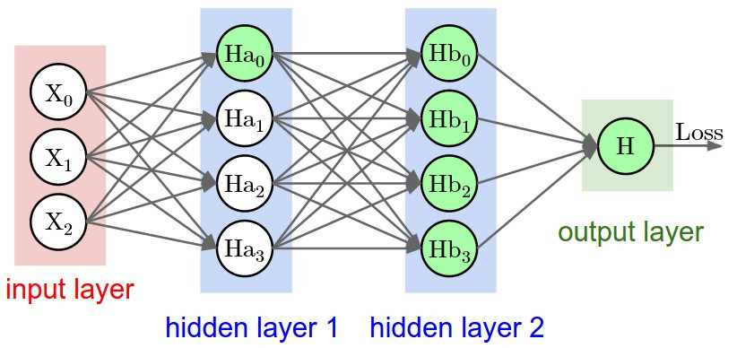
$$\begin{aligned} \small \nabla Loss(\mathbf{w}_{Ha_0}) = \\ \small \frac{\partial }{\partial \mathbf{w}_{X_i,Ha_0}} & \left( \small\frac{\partial Loss}{\partial w_{Hb_0, H}} \frac{\partial w_{Hb_0, H}}{\partial w_{Ha_0, Hb_0}} + \frac{\partial Loss}{\partial w_{Hb_1, H}} \frac{\partial w_{Hb_1, H}}{\partial w_{Ha_0, Hb_1}} + \right.\\ &\left. \small \frac{\partial Loss}{\partial w_{Hb_2, H}} \frac{\partial w_{Hb_2, H}}{\partial w_{Ha_0, Hb_2}} + \frac{\partial Loss}{\partial w_{Hb_3, H}} \frac{\partial w_{Hb_3, H}}{\partial w_{Ha_0, Hb_3}} \right) \end{aligned}$$
Backpropagation (5)
even to check about input dependency
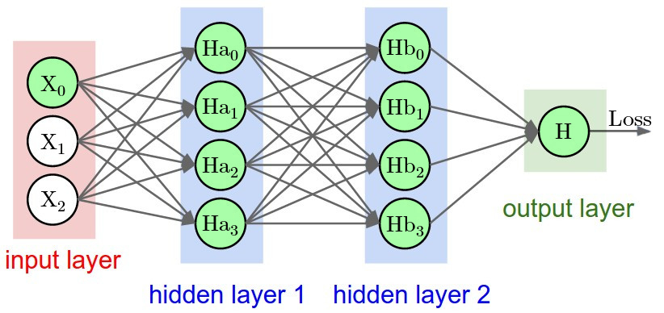
$$\begin{aligned}
\tiny \nabla Loss(X_0) = \tiny \frac{\partial }{\partial X_0} & \tiny \Big( \\
\tiny \frac{\partial }{\partial \mathbf{w}_{X_i,Ha_0}} & \tiny \left(
\frac{\partial Loss}{\partial w_{Hb_0, H}} \frac{\partial w_{Hb_0, H}}{\partial w_{Ha_0, Hb_0}} +
\frac{\partial Loss}{\partial w_{Hb_1, H}} \frac{\partial w_{Hb_1, H}}{\partial w_{Ha_0, Hb_1}} +
\frac{\partial Loss}{\partial w_{Hb_2, H}} \frac{\partial w_{Hb_2, H}}{\partial w_{Ha_0, Hb_2}} +
\frac{\partial Loss}{\partial w_{Hb_3, H}} \frac{\partial w_{Hb_3, H}}{\partial w_{Ha_0, Hb_3}} \right) + \\
\tiny \frac{\partial }{\partial \mathbf{w}_{X_i,Ha_1}} & \tiny \left(
\frac{\partial Loss}{\partial w_{Hb_0, H}} \frac{\partial w_{Hb_0, H}}{\partial w_{Ha_1, Hb_0}} +
\frac{\partial Loss}{\partial w_{Hb_1, H}} \frac{\partial w_{Hb_1, H}}{\partial w_{Ha_1, Hb_1}} +
\frac{\partial Loss}{\partial w_{Hb_2, H}} \frac{\partial w_{Hb_2, H}}{\partial w_{Ha_1, Hb_2}} +
\frac{\partial Loss}{\partial w_{Hb_3, H}} \frac{\partial w_{Hb_3, H}}{\partial w_{Ha_1, Hb_3}} \right) + \\
\tiny \frac{\partial }{\partial \mathbf{w}_{X_i,Ha_2}} & \tiny \left(
\frac{\partial Loss}{\partial w_{Hb_0, H}} \frac{\partial w_{Hb_0, H}}{\partial w_{Ha_2, Hb_0}} +
\frac{\partial Loss}{\partial w_{Hb_1, H}} \frac{\partial w_{Hb_1, H}}{\partial w_{Ha_2, Hb_1}} +
\frac{\partial Loss}{\partial w_{Hb_2, H}} \frac{\partial w_{Hb_2, H}}{\partial w_{Ha_2, Hb_2}} +
\frac{\partial Loss}{\partial w_{Hb_3, H}} \frac{\partial w_{Hb_3, H}}{\partial w_{Ha_2, Hb_3}} \right) + \\
\tiny \frac{\partial }{\partial \mathbf{w}_{X_i,Ha_3}} & \tiny \left(
\frac{\partial Loss}{\partial w_{Hb_0, H}} \frac{\partial w_{Hb_0, H}}{\partial w_{Ha_3, Hb_0}} +
\frac{\partial Loss}{\partial w_{Hb_1, H}} \frac{\partial w_{Hb_1, H}}{\partial w_{Ha_3, Hb_1}} +
\frac{\partial Loss}{\partial w_{Hb_2, H}} \frac{\partial w_{Hb_2, H}}{\partial w_{Ha_3, Hb_2}} +
\frac{\partial Loss}{\partial w_{Hb_3, H}} \frac{\partial w_{Hb_3, H}}{\partial w_{Ha_3, Hb_3}} \right)
\Big)
\end{aligned}$$
Types of Architectures
Feed-Forward neural networks
Convolutional neural networks
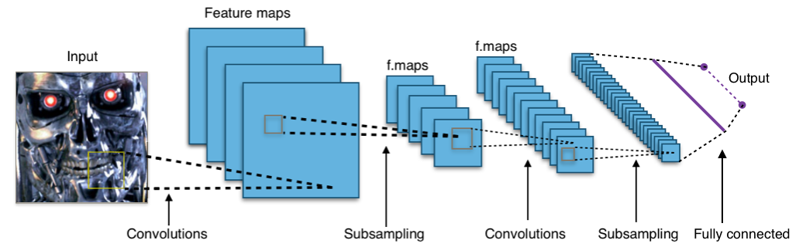Recurrent neural networks
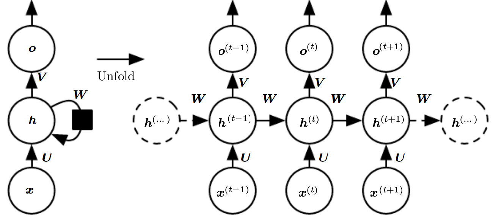Model zoo
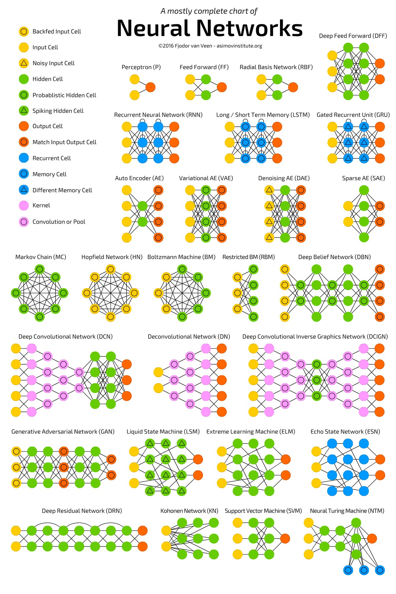and now for something completely different
DeepDream

Google Translate
NeuralDoodle

NeuralEnhance
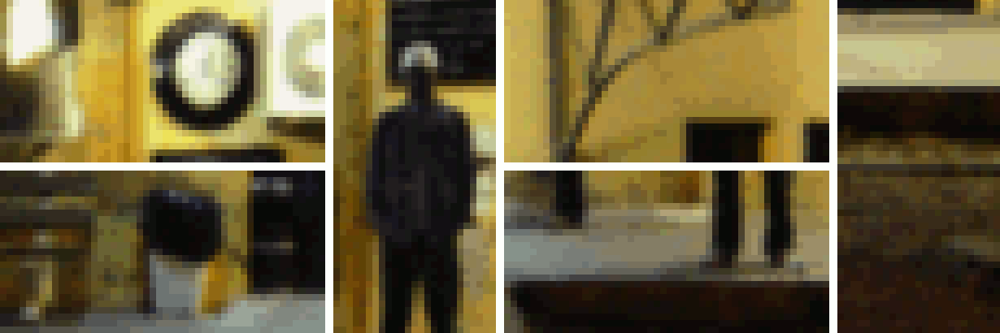 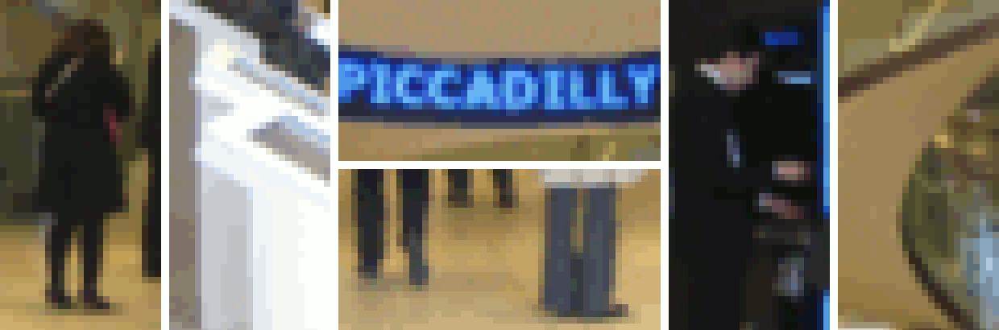 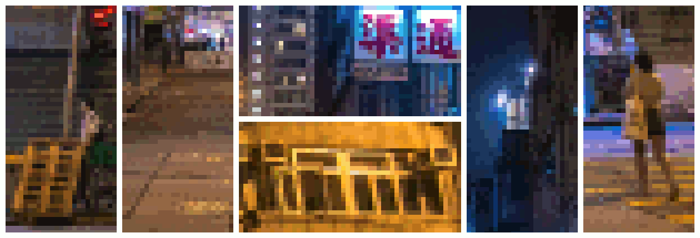Self-driving


Playing Atari
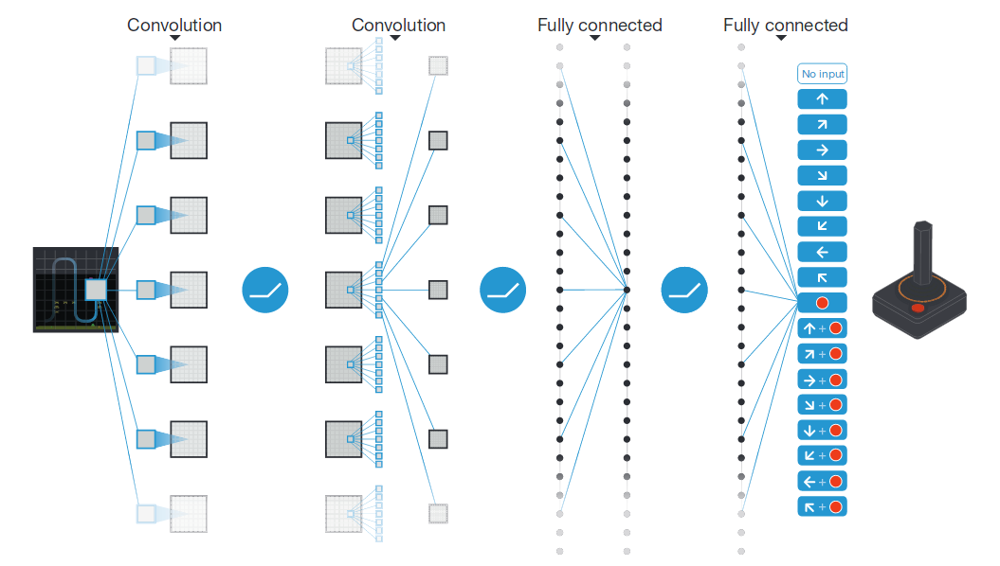Listen, Attend, Spell
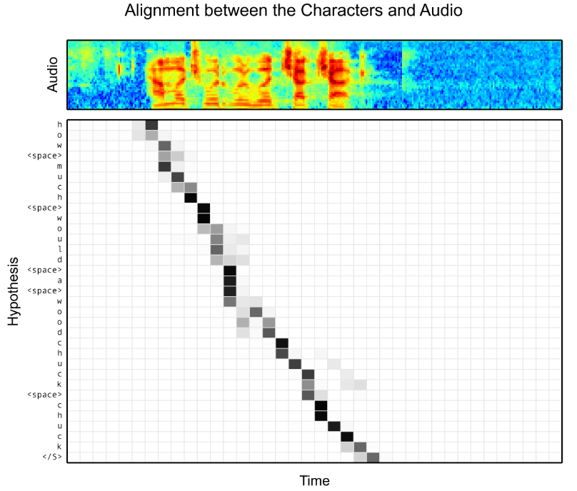Medical Imaging Segmentation
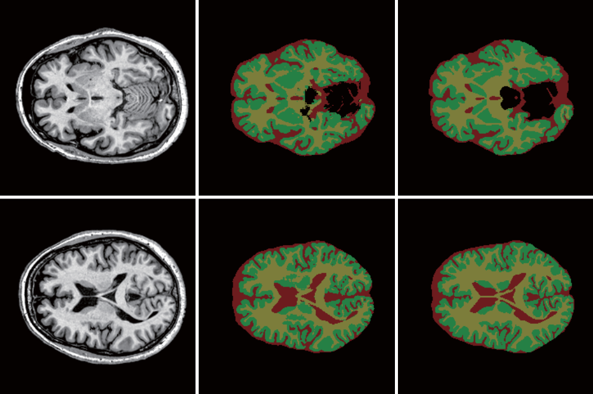You get a framework, and you get a framework...
- Caffe
- Theano
- Tensorflow (Google)
- Torch (Facebook)
- PaddlePaddle (Baidu)
- CNTK (Microsoft)
- MXNet (Amazon)
- Many more...